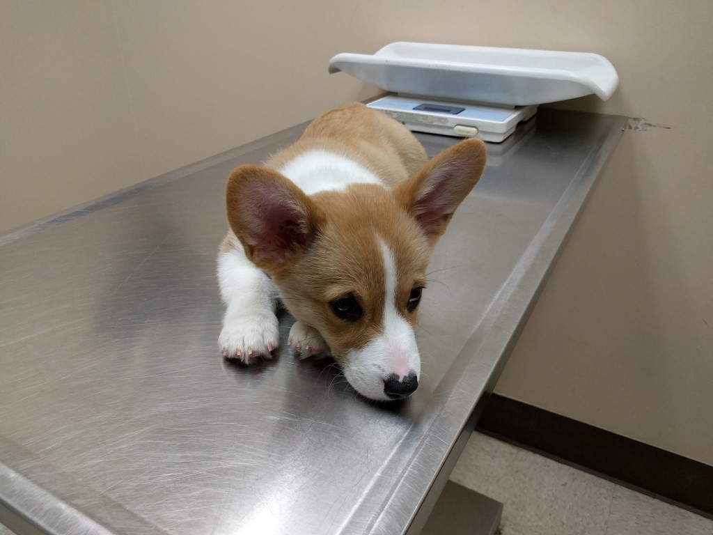
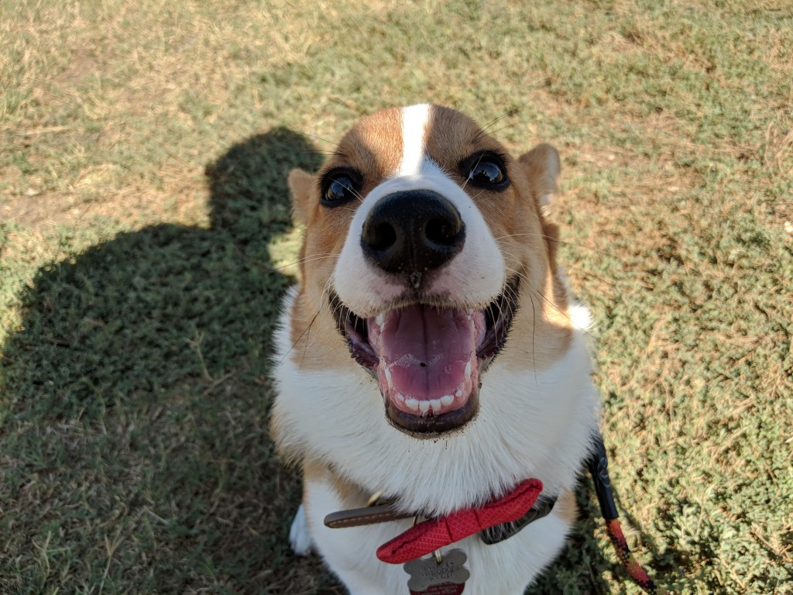

The True Cost of Having a Pet
Ahhh! Puppies are the flippin' cutest!

Little Theodore Wylis finds himself surrounded by six mischievous squirrels. For reasons unbeknown to Theo, the squirrels have gathered outside their fluff tree to congregate and attack the almighty Pembroke Welsh Corgi. As he stands in high noon, he gives one final stinky red eye to each squirrel. Draw! Bite! Didn't even stand a chance.
Everyone who has ever researched getting their own fur ball probably knows they're going to have a jump in expenses but what does owning your pet truly costs?
Upfront expenses
A breeder spawned munchkin - $2000
Maybe I spent quite rambunctiously on Theo but for a Southern California resident who was looking for a pure breed Pembroke Welsh Corgi, this seemed like the average price at the time. You might find cheaper going further east of the U.S.A. but you'd go against the possibility of having to fly to the breeder's location and fly your puppy back if the breeder doesn't ship (most reputable breeders don't).
Recurring expenses
Food - Acana Grasslands. $25 for a ~5lbs bag. This usually lasts us about a month. They say it's better to feed your dog GREAT food than get cheap food and have medical costs later. Throw in the occasional treat bag, food chew toys, you're adding maybe an extra $25 every month.
Toys - I think in the span of 4 months I have bought roughly 10~ toys each costing close to $8 a piece. So $80 in 4 months is $20 a month.
Grooming - For a corgi once they are a certain age and their double coat is fully fluff, you shouldn't need to go to a groomer often? I'm not certain yet but I hear their double coats help A LOT in terms of keeping dirt out. This probably works against you too in terms of keeping dirt that DOES get in there, stay in there? Trimming nails is the only thing I can fully quantify right now and so far we've done it twice in a span of 4 months each costing $20.
Vaccinations - This at the very beginning is very expensive but most of the yearly vaccinations are $35-$50 a year. What I DO pay month to month are the flea/tick prevention. I have been opting on Revolution which comes in 3 month doses for $35 so roughly ~$10 per month.
"Optional" Expenses
Insurance - I cannot stress how much I recommend getting insurance. More on this below but I use HealthyPaws for insurance and it costs me $41 a month for 80% coverage.
Surprise Right Hook
Long story short is that Theodore ate a simple seed that fell down from a tree. Swallowed it whole. Eventually he started vomiting and was taken to the E.R. which eventually led to an endoscopy to pull the seed right out of his mouth. So to summarize: Stress, Unplanned doctor visit, Vomiting, Doctor diagnosis, X-Ray, Ultrasound and overnight stay: $4733 prior to insurance. With insurance, ~$750 dollars. Sure, it's still a lot of money but comparing the worst case scenario, THAT IS WAY BETTER.

Time
A lot costs doesn't necessarily equate easily to actual cash. Some of it is a loss of time.
- Having to go to the groomers or the vet instead of binge watching the latest episodes of Stranger Things.
- I'm pretty sure walks are healthy for me and I probably at least do over an hours worth of walks everyday now.
- I also spend at least 30 minutes to an hour regularly playing games with the dog.
- The various minutes spent preventing the puppy from doing what it shouldn't be doing.
- The various minutes spent convincing the puppy from doing what it should be doing.
Sacrifices
There's a lot sacrifices to be had as well. It's not easy to go somewhere far without having a plan for your furry friend. For example, if I want to go on vacation that involves a plane ride, it's not as easy as packing up my bags and leaving anymore. I have to decide is my furry friend coming along if so, how much will the airline charge for the dog? Is that airline notorious for mishandling pets? Should I just board him at a reputable place? How much will it cost?
Even simple things such as hanging out with friends have its challenges. I cannot stay out too late especially if I still need to feed my dog. I have to coordinate a lot more diligently with friends as opposed to agreeing on a sporadic meet as I am accustomed to.
What are you getting out of it?
It's truly an investment. An investment not for everyone. A lot of studies show that having a companion such as a dog has good implications for your health such as potentially living longer. Honestly though, I do it cause I find corgis ridiculously irresistible. Granted, I did not know how much work it actually involves but if you look at this guy, how can you not want to just play with it!?

I definitely want to note that these are my experiences so far of owning my puppy and isn't necessarily the average case. Heck, you might have a TOTALLY different experience from myself (hopefully for the better!) but the idea is to maybe give you a slightly detailed version of what you'd expect from owning a little gnawing piranha :).
Side note: I honestly thought I was going to make this a HUGE blog post but then I got lazy. :D Hopefully though it has enough content for you to reconsider or accept the potential costs of owning a pet!
Cheers!
Subscribe to Fistful of Cookies
Get the latest posts delivered right to your inbox